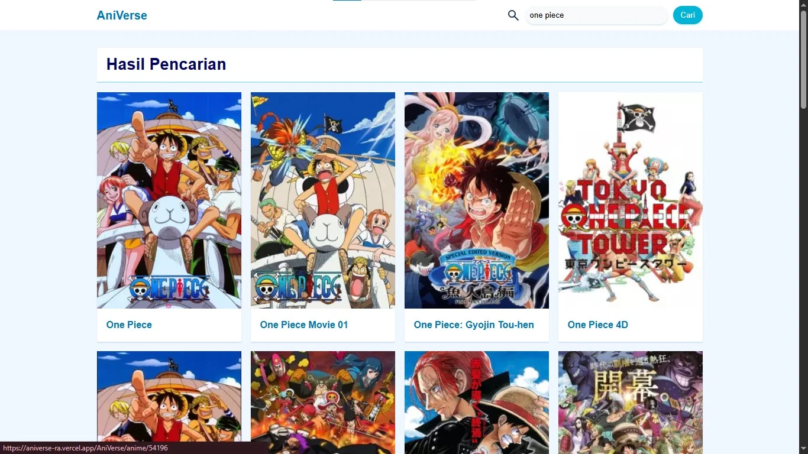
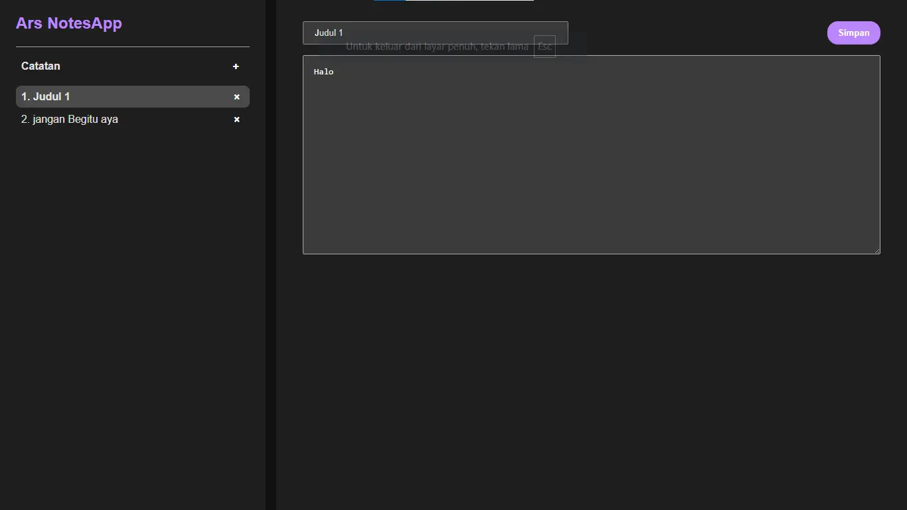
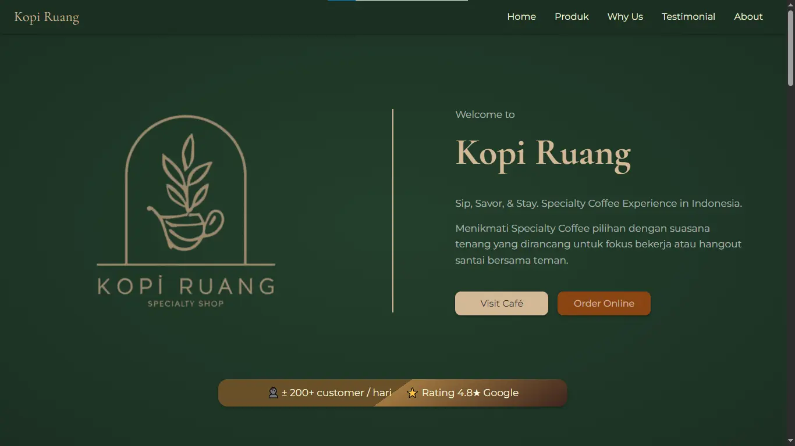
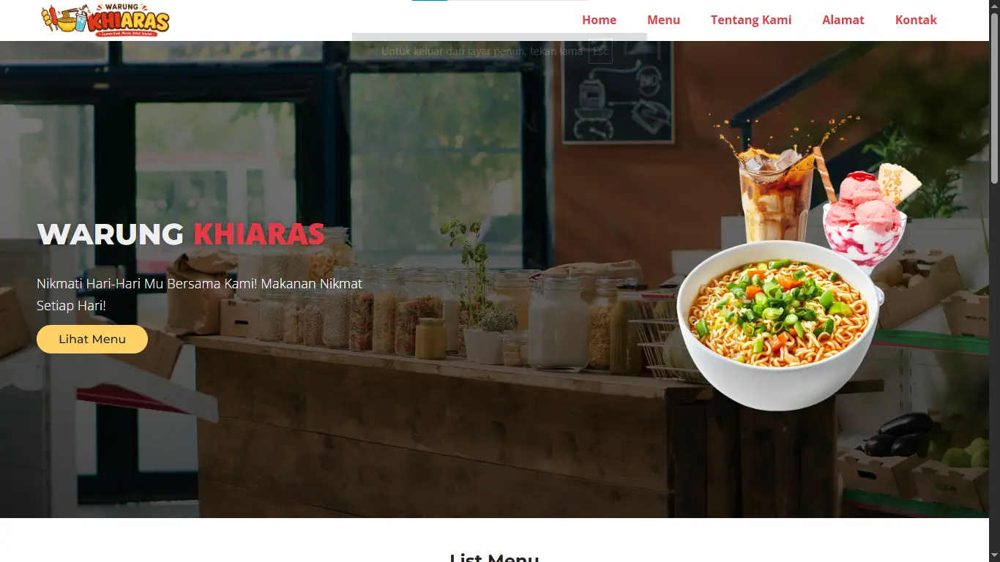

AniVerse
AniVerse, sebuah aplikasi pencari informasi umum seputar anime yang memanfaatkan Public API (Tenrai API). Mengunakan fetch API Javascript. Di deploy pada platform Vercel.
Hi, This is RasyaAlfahri Speaking. And this is my
Di web ini, Anda bisa melihat semua project yang pernah saya buat.
Saya Rasya Alfahri, adalah seorang mahasiswa Informatika biasa yang sedang mendalami tentang pengembangan web. Saya mulai tertarik dengan dunia pemrograman dan pengembangan web sejak saya masih SMA, namun saya baru bisa mempelajarinya dengan serius ketika sudah lulus karena keterbatasan perangkat yang saya gunakan.
Saat ini saya sudah mempelajari tentang HTML, CSS, dan Javascript. Pada HTML saya sudah mempelajari hal tentang HTML dasar, sampai ke tag semantik HTML. Di CSS saya sudah mempelajari dan menguasai tentang CSS dasar, Flexbox, sampai Grid. Pada Javascript juga saya sudah mempelajari tentang Pemrograman Dasar Javascript, Manipulasi DOM, sampai ke Asynchronous Javascript dan Fetch API.
Web Personal Portofolio ini akan saya gunakan untuk mengenalkan kepada kalian project yang pernah saya buat dan saya publish di GitHub.

AniVerse, sebuah aplikasi pencari informasi umum seputar anime yang memanfaatkan Public API (Tenrai API). Mengunakan fetch API Javascript. Di deploy pada platform Vercel.

Notes App, sebuah aplikasi catatan berbasis web yang dibuat untuk layar desktop dengan HTML, CSS, dan Javascript simpel.

Sebuah web landing page dari toko kopi yang dibuat dengan HTML dan CSS simpel, dan responsif pada semua jenis layar device.

Sebuah web landing page dari UMKM yang dibuat menggunakan HTML dan CSS simpel, dan sudah responsif.